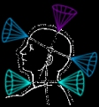
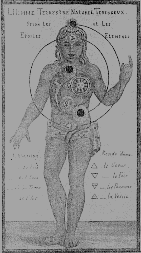

|
 The ChakrasIt is © copyright by Tom DeLiso / Hermes Trismegistus. Please follow the copyright link for additional copyright information.
 A chakra is an energy point in the human body/energy system through which power and life-force flow. There are literally thousands of these points throughout the body, but seven or eight of these have been the main focus of the student of the occult. The description section discusses each of the eight chakra, their location, and how they would appear if you were to see them with the naked eye. The advanced section shows a general view of each chakra in relation to the human body and also a more 3-d view of what these amazing wheels look like. You will note that each chakra has a front and a back except the crown chakra, which only has one opening. The main energy conduit that connects all the chakras together is called the Hara line. It is an energy stream that nearly runs along with the physical spine. The panel in the middle is a breakdown of each of the eight major chakras and a more precise picture of what each looks like. The chakras must be developed to look as they do in the description section. In an undeveloped state they are very small only about two inches (5 centimeters) in diameter and show as pale gray or even depressions in the aura. In a fully developed state they are vibrant and rotating quickly and are like small suns reaching perhaps 6 inches (15 centimeters) across. The crown chakra on a fully realized person can be as large as the entire head and even bigger on a Master. The state of the physical body is in many times a reflection of the condition of a particular chakra. For example if a person has a heart condition many times a damaged heart chakra is the cause. Not that a real physical condition does not exist, for it most certainly may; however keep in mind that the state of your chakra will be reflected in the body. In theory, if you repair the damaged heart chakra, in time the physical condition would clear as well... or, in the least, after medical treatment, a repaired heart chakra will guarantee that the physical problem does not reoccur. For more information on the chakras do a Search under the keyword chakra. And check the Glossary for a short definition and some links to other places on the web covering the topic. There are 7 traditional chakras plus the foot chakra all aligned (generally) in a row from head to toe. Also the chakras pertrude from the body in three dimensions! If you were to look at them they would look like spinning vortexes. Most of the chakra also possess a front and a rear part of them. |
||
| THE CROWN CHAKRA: The Crown Chakra is located above the head. It has a total of 960 spokes and is the most magnificent of all the chakra to see when it is fully awakened. It is the only chakra that possesses a secondary central whirlpool. This chakra is predominately violet in color except for the central whirlpool which is similar to golden sunlight. This chakra serves as the spiritual connection for the individual. It is also the place where life-force enters into the chakra system. In an undeveloped state this chakra is the same size as the others. However as it grows and opens it will encompass the entire head. This encompassing of the entire head is where the idea of putting halo on various deities came from. It also is the place where the tradition of a king wearing a crown comes. The crown symbolizing the fully open and active crown chakra, indicating that the individual was ruling with God and not just ruling with the human self. A missaligned Crown Chakra can cause self centeredness, spiritual poverty and on a more physical side, poor reality control, and low energy all the time. |
||
| THE BROW CHAKRA The Brow Chakra is located between the eyes. It has a total of 96 spokes. It is often seen as dark blue with or without violet and sometimes with pink-rose color coming from it. This chakra is the command center for your third eye. It contains your ability to see things beyond the normal physical senses, and as such is a source of intuition. This chakra is one of the two places where your spirit can leave your body in an out of body event or in an astral projection. A missaligned Brow Chakra can cause: memory problems, migraines, insomnia, neuralgia, high blood pressure, lumbago, sciatica, low immune system and acute sinitis. |
||
| THE THROAT CHAKRA The Throat Chakra is located at the neck. It has a total of 16 spokes. Predominately blue but with alternating blue and green sections. This chakra is vital to communication, not only external but internal. It is the translator of internal feelings into external words and expression. A missaligned Throat Chakra can cause: persistent colds or flu that take a long time to leave, tonsillitis, acute infections, vocal and communication difficulties, and under-active thyroid. It also effects the sternum, throat, and endocrines. |
||
| THE HEART CHAKRA This chakra has 12 spokes and is golden in color but many times can dip in various shades from golden yellow to pink or light orange. The Heart Chakra is located near the heart. However this chakra can float and be off-center to the left or right of the hara line. The optimum position should be dead center the hara, in line with the other chakras. This chakra is very important because it is the only chakra that can transmute the high-vibration energy that comes from the upper three chakras into a form that can be used by the physical body and on the physical plane. Healers (of all forms) use this chakra to heal their patients, as it is the Heart Chakra that transmutes the illness into a more dense form, which then passes through the Foot Chakra and into the earth for processing. The term 'a broken heart' refers to this chakra breaking off at the stem that connects the front part of the chakra to the back. This break causes the heart chakra to shut down causing that empty feeling we are all very much aware of. A missaligned Heart Chakra can cause lung and heart problems (especially angina from over-exertion), asthma, epilepsy, fibrosis, chronic bronchitis, depression, midriff pain and claustrophobia. |
||
| THE SOLAR PLEXUS (NAVEL) CHAKRA The Solar Plexus (also called the Navel) Chakra is located at the solar plexus (midway between your belly button and the bottom of your rib cage). This chakra is another one that has a tendency to float left or right, like the heart chakra. Again its optimum position is in line with the hara line and the other chakras. This chakra has 10 spokes and comes in various shads of red but also has random spokes that are green. This chakra is also one of the two places where your spirit can leave the body during an out-of-body event or an astral projection. It is the most sensitive of the chakras and the easiest chakra to send energy out of. A missaligned Solar Plexus Chakra can cause problems in the: adrenal, nerve tissue, skin disorders (jaundice), liver, spleen, pancreas and kidneys (re: elimination/cleansing), arthritis, hiatus hernia, diabetes, anorexia, body pH, and menopausal flushing. |
||
| THE SEXUAL (SPLEEN) CHAKRA The Sexual (also known as spleen) Chakra is located just above the sex organs. This chakra has 6 spokes each of which are a different color: red, orange, yellow, green. blue, violet. This chakra supplies some (but not all) the energy transferred during sex. A misaligned Sexual Chakra can cause: imbalances in the endocrine system, muscle tension, poor vitamin C absorption, thyroid problems, bed-wetting, nervous depression. |
||
| THE ROOT (BASE) CHAKRA The Root (also called the Base) Chakra is located at the base of the spine. This chakra has 4 spokes red and dark-orange in hue. This chakra is also the home of the kundalini energy. The kundalini energy is the coiled mystical energy that rises upward through the spine energizing all the other chakras into full operation and potential. This chakra is also the chakra of your animal instincts and all those things that go along with survival. It is powerful (or it feels powerful) because the energy here is in raw form and is most near to a physical energy. A missaligned Root Chakra can cause things like: sexual or reproductive problems, circulation and blood deficiencies, constipation, bladder and Chronic Fatigue Syndrome. |
||
| THE FOOT CHAKRA The Foot Chakra is often considered part of the Root Chakra. However in Hermetic philosophy we recognize this chakra as just as important as the rest. The Foot Chakra is located in the arch on each foot (note there is only one foot chakra, but it is located in the arches of each foot). This chakra (when it can be seen, for it is very difficult to make out) has three, two, or one spoke and changes in hue from a deep brown, deep green, or a pale yellow. This chakra is responsible for passing energy to and from your entire energy system into the earth. It is your grounding point where body energy is transformed into earth energy and the reverse. A good healthy foot chakra will help you to more easily manifest things physically, as it is the transformer of your thought energy into the earth system. A good Foot Chakra will also help you to stay physically focused and on task throughout your day. If you are clumsy or fall frequently it is a sign that this chakra is not working well. Foot massages can help greatly here as well as walking barefoot in the dirt or sand. |